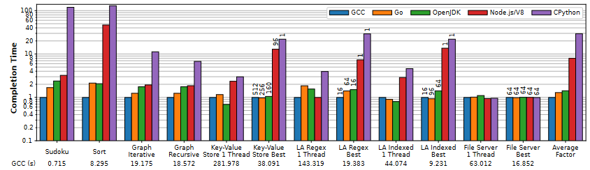

ATC 22 has 18 tracks, and 64 papers are accepted.
Paper titles in ATC are more interesting than those in SIGCOMM or INFOCOM.
This paper compares the performance of Java, Go, JavaScript and Python with C++.
We found that V8/Node.js and CPython exhibit excessive overheads, executing applications 8.01x and 29.50x slower on average than their C++ counterparts.
In contrast, OpenJDK and Go applications are performance competitive to C++, running only 1.43x and 1.30x slower.
Features of managed language:
| Programming Language | Applications |
|---|---|
| Java | Hadoop |
| Java | Spark |
| Go | Kubernetes (a distributed key-value store) |
| Go | M3 (a distributed time series database and query engine built by Uber) |
| Go | Biscuit |
| Python | Openstack |
| Python | Paypal |
| Python | |
| Python | Dropbox |

为了解决P4语言编程困难的问题，很多研究者研究制作P4代码生成器。这篇文章提出了一个工具为代码生成器debug。
We apply Firebolt to three popular open-source DP generators, i.e., Marple, Sonata, and Poise.
I’m interested in these DP generators.
这篇论文考虑了，神经网络训练时，梯度量化带来的精度损失问题。
在网内聚合中，由于可编程交换机的限制，工作节点需要将梯度转换成整型才能让可编程交换机进行聚合。
针对现有网络仿真器的缺点进行优化，提出一个新的网络仿真器。对标NS-3 以及 Mininet。和我们做的工作相关度为0。
Paper Reading, Summary — Sep 16, 2022